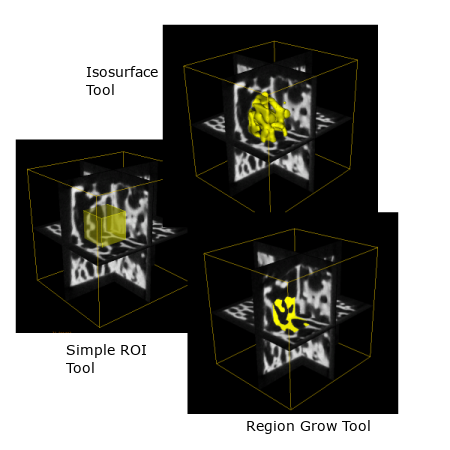

Managing 2D and 3D Regions of Interest (ROI)
This sections describes how to use ROIs to limit visualization and analysis to specific portions of an image.
Overview

For many operations in MicroView, the starting point is the selection of a 2D or 3D region of interest (ROI). ROIs define the portion of the volume to be analyzed. For instance, an ROI can be created around a feature in an image in order to compute the mean and standard deviation of just that feature. The active ROI in MicroView is typically displayed in yellow to differentiate it from other surfaces and voxel highlight tools. The ROI may appear as a transparent yellow surface, or as a grouping of yellow voxels in the displayed image plane, depending on the tool used to generate the ROI. Currently, there are six tools that can be used to generate an ROI:
- The Standard ROI Tool - The 7 and 8, or alternatively Alt+7 and Alt+8 keys can be used to quickly define a rectangular ROI. You can use the "Standard ROI" menu button for greater control over the size and location of the ROI.
-
The Histogram Plot Tool - This tool is used to plot histogram values of voxels contained within the active ROI, but can itself be used to select a range of voxels, by graylevel value, to serve as an ROI.
-
The Advanced ROI Tool - This tool is used to define more generic regions of interest. For instance, spline-fitted surfaces can be defined using this tool. This tool also provides a deformable-model based shrink-wrapping application.
-
The Region Grow Tool - Use this tool to define an ROI based on connected voxels with similar gray-level values. Connected voxels can be grouped together using one of three rules: all voxels with gray-level values greater than a user-defined threshold, all voxels with gray level values lower than a user-defined threshold, or all voxels with gray level values within a range of values centered on a user-defined threshold. While used to select an ROI, the tool can itself operate within the confines of a pre-existing ROI, or can be applied to the whole image.
-
The Advanced Region Grow Tool - Use this tool to define an ROI based on connected voxels with similar gray-level values. Connected voxels can be grouped together using one of three rules: all voxels with gray-level values greater than a user-defined threshold, all voxels with gray level values lower than a user-defined threshold, or all voxels with gray level values within a range of values centered on a user-defined threshold. While used to select an ROI, the tool can itself operate within the confines of a pre-existing ROI, or can be applied to the whole image. This tool provides more control for the user over the growth of the selected region. This includes controling the number of iterations of growth, along with the smoothness of the surface of the ROI selected.
-
The Cortical Bone ROI Tool - When applied to a CT image of a bone, this tool can be used to select an ROI corresponding either to the cortical shell or the internal trabecular space of the bone. The tool uses a series of morphological operators to semi-automatically select cortical bone components. A gray-level threshold value, and two scaling size parameters may be tuned in order to improve the accuracy of this ROI tool.
-
The ROI Manager Tool - This tool replaces and enhances the functionality of the Overlay Geometry tool by enabling MicroView to store and manipulate more than one ROI in memory. File operations, combinations of multiple ROI and manipulation of the display characteristics are possible.
Once an ROI has been defined, a number of operations may be performed, including: